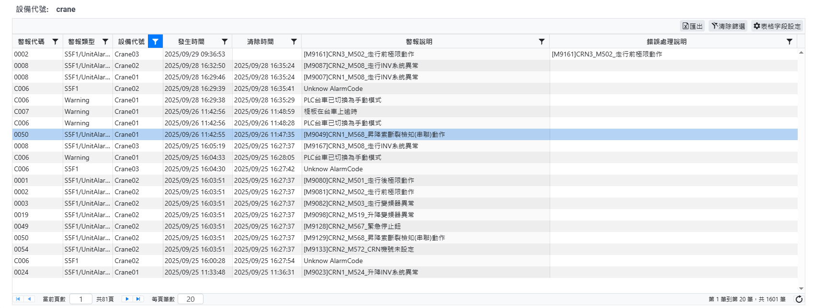
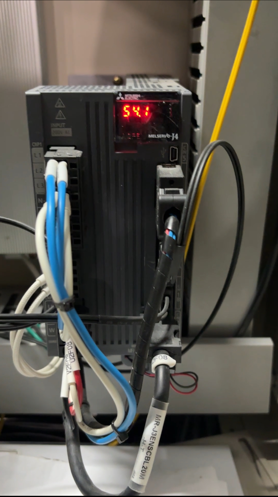

大型自動化冷鏈倉儲之預防性維護
& 系統老化根本原因分析 (RCA)
報告人：李哲維
報告日期：2025.09.28
專案總覽與初期症狀
初始目標
提升整體產能，並解決 Crane 過度震盪問題。
觀察症狀
動力滾筒頻繁「未達下個光電感測器就停止」，控制卡延時參數已達最大值。
核心洞見
意識到「治標不治本」的調整，正掩蓋著深層的系統性風險。
核心挑戰：設備商鎖定 PLC 核心程式碼
分析核心思想
觀物如實，拒絕碎片認知
堅持不滿足於表面症狀，透過跨領域整合，建立完整的證據鏈以探究問題本質。
1
電控層分析
檢查變頻器配置與運動曲線，排除運動控制的「規劃邏輯」問題。
2
數據層挖掘
深入WCS歷史數據與警報紀錄，尋找異常模式與關鍵證據。
3
物理層驗證
根據數據線索，對實體伺服馬達等硬體進行針對性檢查。
證據鏈 I：數據層警報 (WCS Log)
- 高頻率異常：系統於 2025 年 9 月底出現大量且密集的嚴重警報。
- 直接證據：警報 [M9049]...昇降鋼索磨耗/拉伸` 直接證實了物理磨損。
- 間接證據：多筆「行走INV未統異常」紀錄，顯示變頻器回饋系統不穩定。
- 風險升級：數據驗證了郵件中提及的「昇降繩索斷裂檢知」的更高風險警報。

證據鏈 II：物理層警報 (The Smoking Gun)

最穩定的箱式立庫系統，其核心 Mitsubishi MELSERVO-J4 伺服放大器出現 警報 54.1，意指「馬達本體或核心感測器異常」，為系統性的硬體耗損提供了無法辯駁的證據。
根本原因分析 (Root Cause Analysis)
WCS 警報 / 伺服器故障 / 現場觀察
核心發現：加速性的系統老化 (Accelerated System Aging)
根本原因：設廠至經設備從未規畫任何「保養檢護作業」
技術細節：低溫導致「軸承潤滑油顆粒化，磨損率加倍」
結論與策略性建議
結論
- 系統已進入不可逆的加速衰退期。
- 單點、反應式的維修已無實質意義。
策略性建議
- 標準維修流程緩不濟急，且會被驗收環節卡關。
- 應將此份包含完整證據的分析報告，直接提交至企業的**風險控制部門**。
Q & A
敬請指教